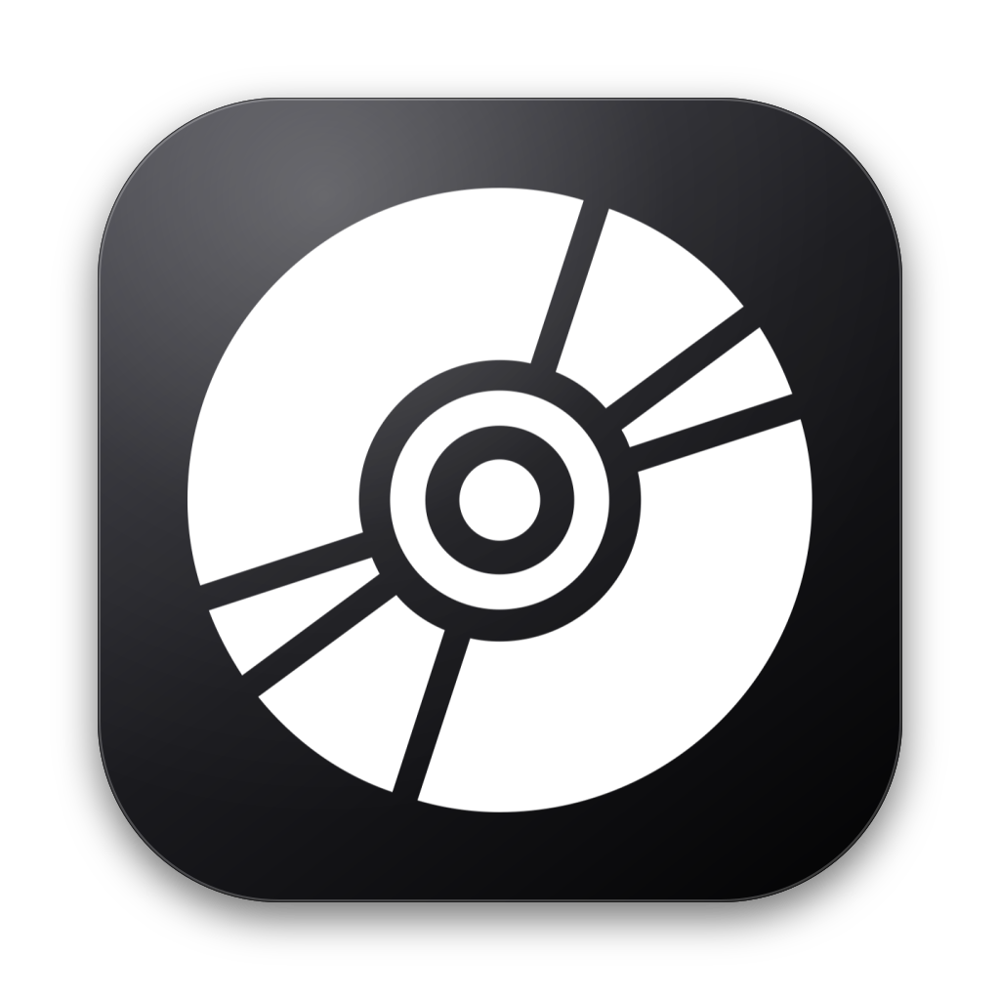

Notes
Uses the same opticaldisc.fill symbol as the idle now-playing panel: solid disc, curved reflective slots, hub and spindle. Glyph rendered from the system symbol at 1024 and placed flat on a black gradient squircle.
The earlier jewel-case concepts are archived in case/.